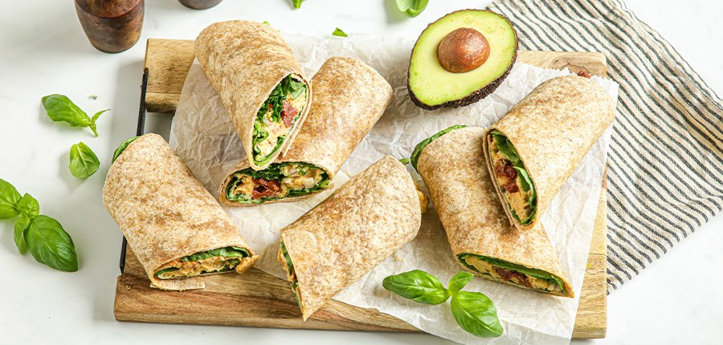

Recept: kikkererwten wraps

Ingredienten
265 gr kikkererwten ( blik à 310 gr ) (Bonduelle)
- 125 gr plantaardige kwark (Alpro)
- 1 theelepel mosterd
- 0.5 theelepel gerookte paprikapoeder
- Peper en zout naar smaak
- 0.5 theelepel knoflookpoeder
- 0.5 rode ui
- 200 gr verse spinazie
- 75 gr zongedroogde tomaatjes
- 4 eetlepels pijnboompitten
- 4 volkoren wraps
Bereiding
- Spoel de kikkererwten goed af en doe ze in een kom.
-
Voeg de plantaardige kwark, mosterd, gerookte paprikapoeder, peper, zout
en knoflookpoeder toe en prak het met een vork. Mix het tot een stevig
mengsel, maar prak het niet helemaal fijn.
- Snipper de rode ui en schep deze door de kikkererwtensalade.